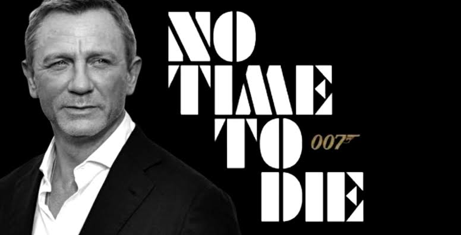

No Time to Die is an upcoming spy film directed by Cary Joji Fukunaga, and the twenty-fifth installment in the James Bond series to be produced by Eon Productions.[2] The film features Daniel Craig in his fifth outing as the MI6 agent James Bond.[3] Ralph Fiennes, Naomie Harris, Ben Whishaw, Rory Kinnear, Jeffrey Wright, Léa Seydoux, and Christoph Waltz reprise their roles from previous films, with Rami Malek, Ana de Armas, Lashana Lynch, David Dencik, Dali Benssalah and Billy Magnussen joining the cast. It will be the first film in the series to be internationally distributed by Universal Pictures, following the expiration of Columbia Pictures' contract after Spectre.
Development of the film began and confirmed in 2016. Universal Pictures and United Artists Releasing acquired the distribution rights internationally; in the United States, United Artists Relasing holds the rights, and Universal will also release the film on home media domestically.[4] Danny Boyle was originally attached to direct and co-write the film with John Hodge; both left due to creative differences in August 2018. Fukunaga was announced as Boyle's replacement a month later. The majority of the cast had signed on by April 2019. Principal photography lasted from April to October 2019.
The film is scheduled for theatrical release on 2 April 2020 in the United Kingdom and on 8 April 2020 in the United States